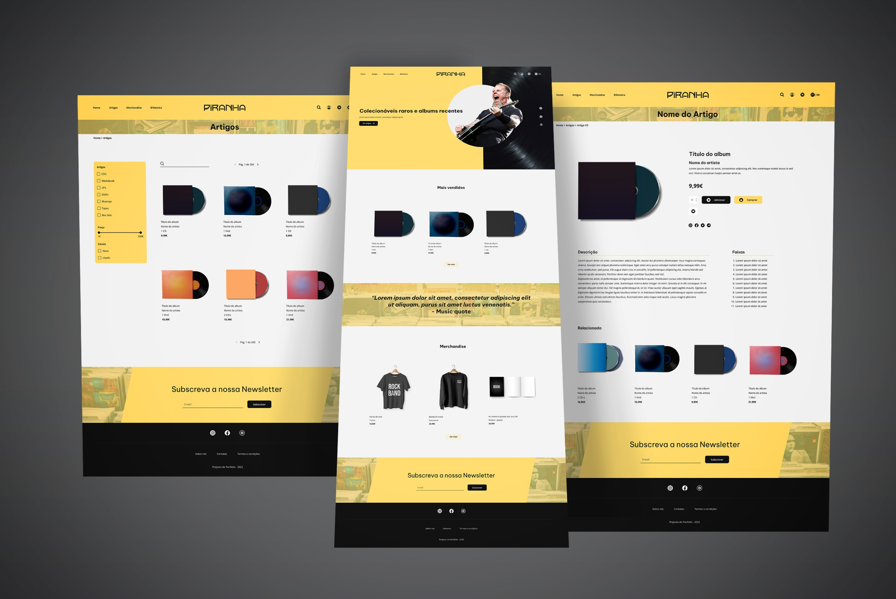
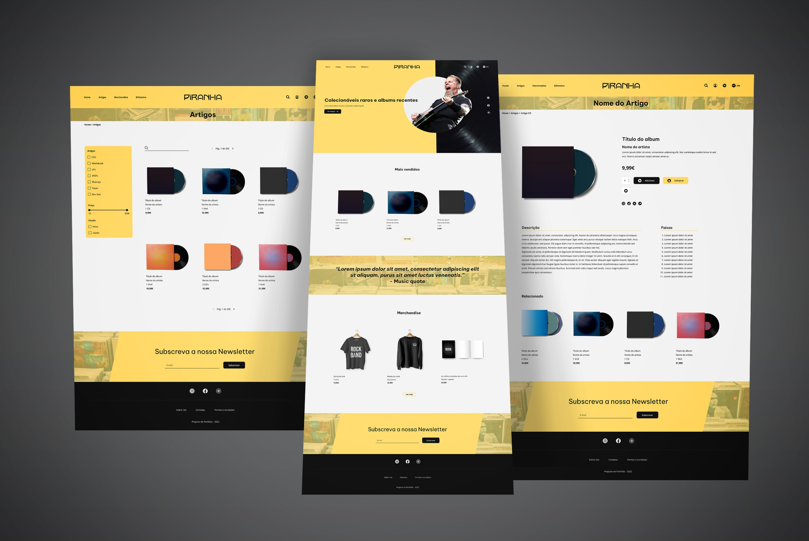

Music Store: Piranha
Web design (UX/UI), remaking a website.
 


About this project
Type of project
This is a three weeks group project, that was made in my UX/UI course, with the objective of remaking a website that was in a bad shape.
The hi-fi wireframe was made by me and a partner, for our portfolio.
Grade was 19 (0-20).
Difficulties
Since this project was about a real store, we couldn't do things as if it was our store.
We needed to give our little touch in the design but also keeping the values of the store.
What I learned
I learned that design is how things work, not only how it looks.
I also learned that the key is to be user-centric and solve the problems they are facing.
Overview
Business goals
This is a real store, in Porto, that sells CD's and vinyls and all type of musical collectables.
The store owner aspires to achieve international success, to be associated with good music and also to start selling more online.

Problem
The website is in a very bad shape, you can check the website here.
Some functionalities aren't working, it has a lot of things in the screen and makes it very confusing.
It also seems too underground, so the store wishes to achieve a more diverse audience.

Solution
We came up with a more modern design, a bit edgy and added missing funcionalities to help the store achieve the business goals.
Why?
The store sells second hand products which we created a filter for that and an option to switch from PT to EN language since the store wants to sell online to other countries.
The landing page has a lots of white space and a some tension with the picture and text overlapping it, to give it a bit of an edgy feeling which defines the store.

UX/UI Process
User Persona
User interviews were not a part of the project sadly, but we did research anyway.
The store has social media, so we went and checked out what the customers were saying about the store and also the reviews on Google.
We could then understand their painpoints and all the necessary traits.

Moodboard
We got inspired by the 90s which was the era of grunge and nu-metal.
What we tried to do was give it a feeling of the 90s but with a bit of a modern touch.
This way people could still relate to it and the customer's diversity would increase as the store mentioned in the briefing.

Site map
The website would maintain the majority of the paths but we optimized some to improve the user-flow, and we also included some new paths for the new functionalities.

Wireframes
Did some lo-fi wireframes and after that, we did the hi-fi wireframes.
The hi-fi wireframe has some simple hover effects (change of color, size changing, opacity, nothing extreme).

Design style guide
A design style guide was made, to clarify the use of typography, primary, secondary and accent colors and icons.
A design style guide was not mandatory, me and partner chose to do a simple one just for ourselves.

Project Management
Miro
We used Miro to organize the tasks and to show or talk about what each of us was doing.
We took note of the stakeholders, the priority of the stakeholders, what was in the scope, what was needed for the project to be sucessful and all of those details.

If you enjoyed this project, check my UX design with branding about Pastelaria Docelene.
You can also contact me.
Contact
Thank you for your time.